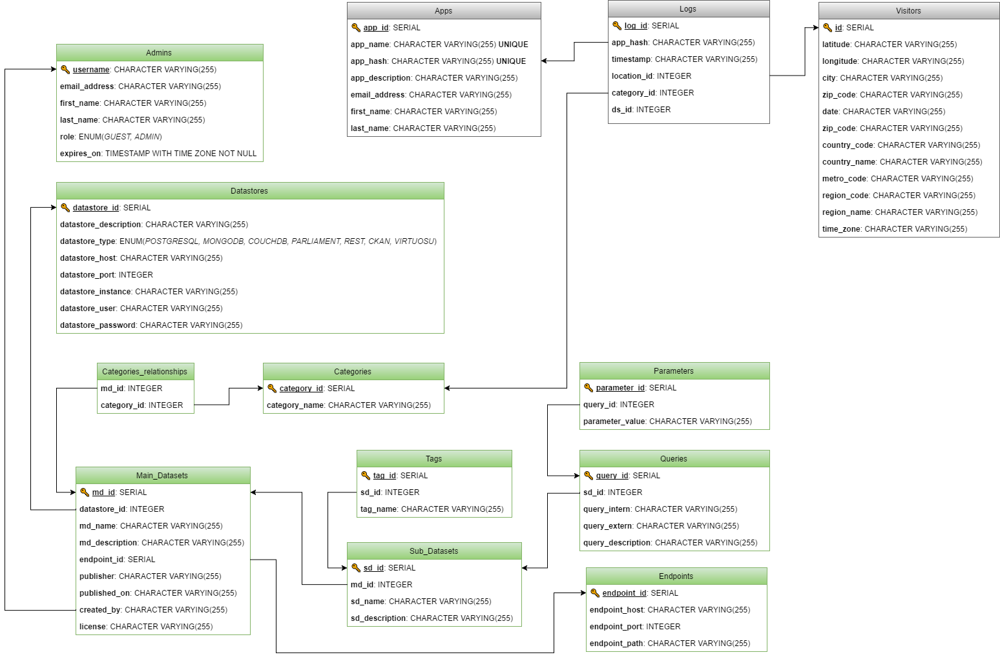

| Examples | SQL-Schema |
|---|---|
| 1 | Apps |
| 2 | Logs |
| 3 | Admins |
| 4 | Datastores |
| 5 | Endpoints |
| 6 | Categories |
| 7 | Categories_Relationships |
| 8 | Main_Datasets |
| 9 | Sub_Datasets |
| 10 | Tags |
| 11 | Queries |
| 12 | Parameters |
| 13 | Visitors |
The following figure shows the database-schema:

1. Apps¶
| app_id | app_name | app_hash | app_description | email_address | first_name | last_name |
|---|---|---|---|---|---|---|
| 1 | test | abc123def456ghj789klm | test app | max@mustermann.com | Max | Mustermann |
2. Logs¶
| log_id | app_hash | timestamp | category_id |
|---|---|---|---|
| 1 | abc123def456ghj789klm | 2016-06-20T07:25:32.112Z | 1 |
| 2 | abc123def456ghj789klm | 2016-06-23T12:43:01.212Z | 1 |
| 3 | abc123def456ghj789klm | 2016-06-23T12:44:10.002Z | 1 |
| 4 | abc123def456ghj789klm | 2016-06-23T12:45:32.090Z | 2 |
| 5 | abc123def456ghj789klm | 2016-06-24T15:12:45.321Z | 2 |
3. Admins¶
| username | password | email_address | first_name | last_name | role | expires_on |
|---|---|---|---|---|---|---|
| n_schi16 | abc123 | admin@example.org | Nicho | S. | ADMIN | NULL |
| t_user01 | xyz789 | testuser@example.org | Test | User | GUEST | 2017-01-01T00:00:00.000Z |
4. Datastores¶
| ds_id | ds_type | ds_description | ds_host | ds_port | ds_instance | ds_user | ds_password |
|---|---|---|---|---|---|---|---|
| 1 | POSTGRESQL | local PostgreSQL-Database with installed PostGIS-Extension | 127.0.0.1 | 5432 | oct_db | oct | oct |
| 2 | POSTGRESQL | extern PostgreSQL-Database | http://giv-lodumdata.uni-muenster.de | 5432 | oct_db_2 | oct | oct |
| 3 | MONGODB | local MongoDB | 127.0.0.1 | 27010 | |||
| 4 | COUCHDB | local CouchDB | 127.0.0.1 | 8000 | |||
| 5 | PARLIAMENT | local Parliament-Server | 127.0.0.1 | 6000 | |||
| 6 | CKAN | local CKAN-Datastore | 127.0.0.1 | 5000 | |||
| 7 | VIRTUOSU | local Virtuosu-Server | 127.0.0.1 | 4000 | |||
| 8 | REST |
5. Endpoints¶
| endpoint_id | endpoint_host | endpoint_port | endpoint_host |
|---|---|---|---|
| 1 | http://giv-oct.uni-muenster.de | 80 | /api |
| 2 | http://envirocar.org | 80 | /api/stable/ |
| 3 | http://envirocar.org | 80 | /api/dev/ |
6. Categories¶
| category_id | category_name |
|---|---|
| 1 | Population |
| 2 | Education and Science |
| 3 | Geography, Geology and Geodata |
| 4 | Law and Justice |
| 5 | Health |
| 6 | Infrastructure, Construction and Housing |
| 7 | Culture, Leisure, Sport and Tourism |
| 8 | Public administration, Budget and Taxes |
| 9 | Politics and Elections |
| 10 | Social |
| 11 | Transport and Traffic |
| 12 | Environment and Climate |
| 13 | Consumer Protection |
| 14 | Economy and Employment |
7. Category_relationships¶
| md_id | category_id |
|---|---|
| 1 | 6 |
| 1 | 11 |
| 1 | 12 |
| 2 | 11 |
| 3 | 11 |
| 3 | 12 |
| 4 | 11 |
| 4 | 12 |
8. Main Datasets¶
| md_id | ds_id | endpoint_id | created_by | md_name | md_description | publisher | published | license |
|---|---|---|---|---|---|---|---|---|
| 1 | 1 | 1 | n_schi16 | Water gauges | Datasets about a mobile water gauge sensor network | Nicholas Schiestel | July 2016 | MIT |
| 2 | 1 | 1 | n_schi16 | Plants | Dataset about plants | Nicholas Schiestel | June 2016 | MIT |
| 3 | 8 | 2 | n_schi16 | EnviroCar | The EnviroCar Project | Institute for Geoinformatics | 2013-01-01 | MIT |
| 4 | 8 | 3 | t_user01 | EnviroCar | The EnviroCar Project | Institute for Geoinformatics | 2013-01-01 | MIT |
9. Sub Datasets¶
| sd_id | md_id | md_name | md_description |
|---|---|---|---|
| 1 | 1 | Sensors | The Sensors table |
| 2 | 1 | Water Bodies | The Shapes table |
| 3 | 1 | Water Gauges | The Measurements table |
| 4 | 2 | Family | The Families table |
| 5 | 2 | Genus | The Genera table |
| 6 | 2 | Specie | The Species table |
| 7 | 3 | Tracks | The Tracks endpoint |
| 8 | 3 | Phenomenons | The Phenomenons endpoint |
| 9 | 3 | Sensors | The Sensors endpoint |
| 10 | 3 | Groups | The Groups endpoint |
| 11 | 3 | Users | The Users endpoint |
| 12 | 3 | Measurements | The Measurements endpoint |
10. Tags¶
| tag_id | sd_id | tag_name | tag_language |
|---|---|---|---|
| 1 | 1 | Sensors | ENGLISH |
| 2 | 1 | Coordinates | ENGLISH |
| 3 | 1 | GPS | ENGLISH |
| 4 | 1 | Sensoren | GERMAN |
| 5 | 1 | Koordinaten | GERMAN |
| 6 | 2 | Water Bodies | ENGLISH |
| 7 | 1 | River | ENGLISH |
| 8 | 1 | Lakes | ENGLISH |
| 9 | 1 | Water gauges | ENGLISH |
| 10 | 1 | Water levels | ENGLISH |
| 11 | 1 | Measurements | ENGLISH |
| 12 | 1 | Distances | ENGLISH |
11. Queries¶
| query_id | sd_id | query_intern | query_extern | query_description |
|---|---|---|---|---|
| 1 | 1 | SELECT * FROM Sensors; | List all Sensors | |
| 2 | 1 | SELECT * FROM Sensors sensors JOIN Shapes water_bodies ON sensors.water_body_id=water_bodies.water_body_id; | List all Sensors with their related Water Body | |
| 3 | 2 | SELECT * FROM Shapes; | List all Water Bodies | |
| 4 | 3 | SELECT * FROM Measurements; | List all Water Gauges (Measurements) | |
| 5 | 3 | SELECT * FROM Measurements WHERE sensor_id=$1; | List all Water Gauges (Measurements) of a Sensor by its sensor_id |
12. Parameters¶
| parameter_id | query_id | parameter_value |
|---|---|---|
| 1 | 5 | 1 |